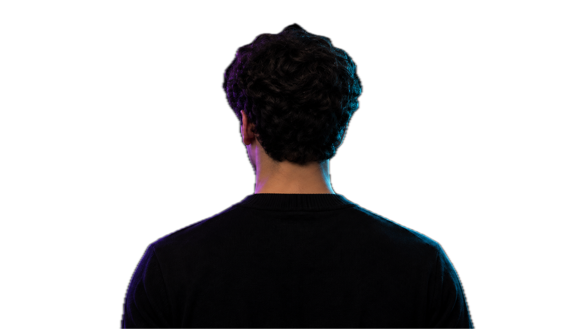
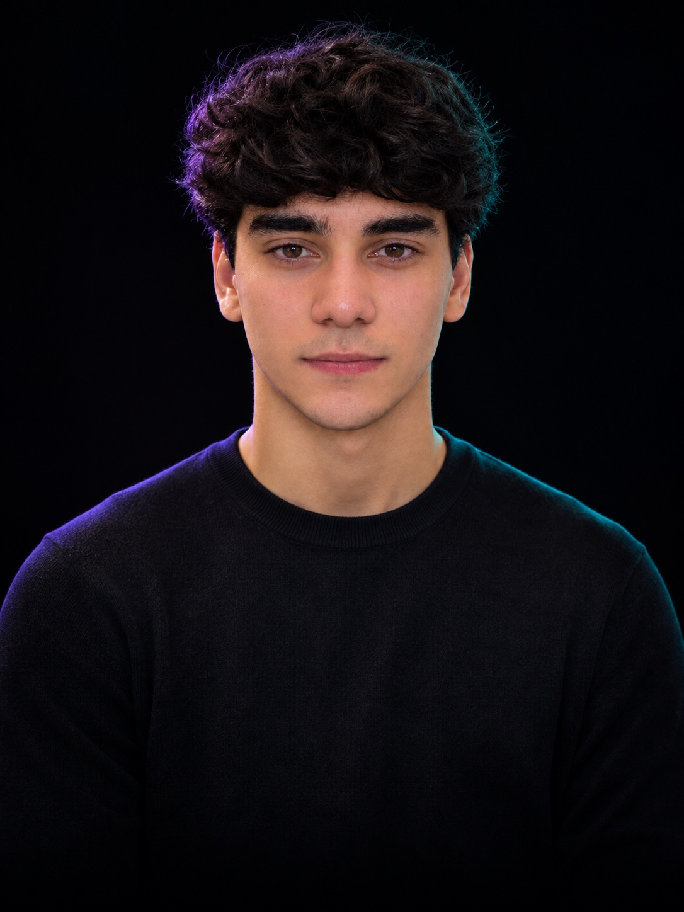

Curso Bacharelado em Inteligência Artificial na UniCEUB e faço o CS50P de Harvard. Sou cofundador da BrandForge, que cria presença digital e automações com IA para pequenas e médias empresas. Já construí agentes com RAG e um protótipo de atendente de IA por voz.
Disponível para estágio em Engenharia de IA · remoto ou híbrido em Brasília · início imediato

Chatbot conversacional que roda direto no terminal, integrado à API do Claude da Anthropic. Suporta conversas multi-turno com histórico completo, interface colorida no terminal e respostas automáticas em português ou inglês dependendo do idioma do usuário.
Aberto a oportunidades remotas em IA, colaborações em projetos e conexões com a comunidade tech. Me manda uma mensagem!
silvestrefernandes12345@gmail.com